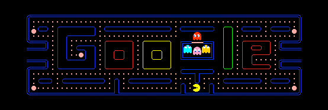

Comme énoncé dans l’onglet histoire, Pac Man se nommait en premier lieu «Puck man ».
Le nom fut changé pour éviter la ressemblance avec un certain mot anglais.
Les concepteurs avaient peur que des personnes grattent la boucle du P pour transformé la lettre en F sur les machines des salles d’arcade.
Chaque fantôme a un comportement qui lui est propre: Blinky est fonceur, Pinky a tendance à se mettre en embuscade, Inky est imprévisible et Clyde feint l'indifférence.
A la base l'idée de pacman est venue, au créateur Toru Iwatami, lorqu'il mangeait une pizza.
Meilleur score : En 1999, l’Américain Billy Mitchell devient le premier joueur à avoir réalisé le score parfait de 3 333 360 points dans le jeu. Il a terminé les 256 niveaux en
six heures, attrapant tous les fruits, mangeant les quatre fantômes à chaque bonus, et ne perdant aucune vie.
Le 21 mai 2010, le moteur de recherche Google modifie son logo en une version jouable (JavaScript et HTML5) de Pac-Man pour célébrer les trente ans du jeu, cette version de
Pac-Man restera deux jours sur la page d’accueil Google. Il reste par ailleurs toujours disponible. Pour y jouer, cliquez sur la bannière :
